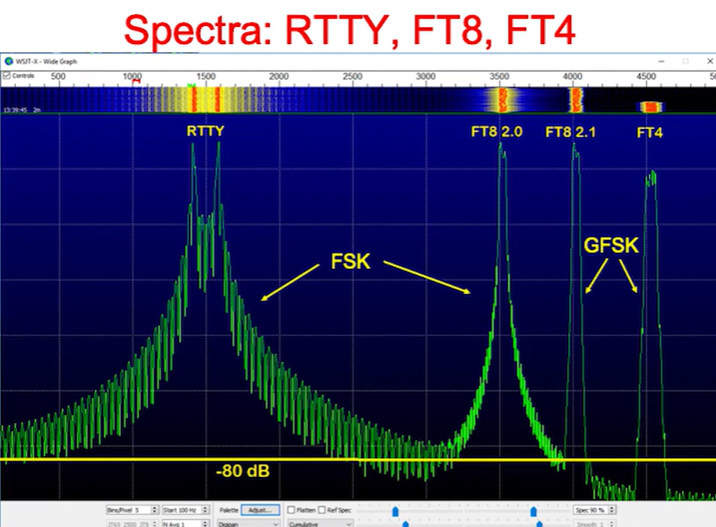

One quick example before talking about how FT8 works, is MQ0AWS’s FT8 log, where on FT8 using a 22 Watt transmitter, he was able to have a successful QSO with a distance of 10699 miles from England to Tasmania Australia, coming to a 2.06 milli-Watt per mile power rate. The full log is at https://m0aws.co.uk/mq0aws/MQ0AWS_WSJT_log.html.
FT8 mode transmissions are designed to be generated on a computer, then sent from the sound card to the microphone input of a ham radio set to a specific frequency depending on the band in use, and to have that sound transmitted in single sideband mode. As most ham radios limit SSB to 2500 Hz bandwidth from the center, FT8 was designed to use any frequency from 200 to 2500Hz (audio to be transmitted via SSB at the radio), and each transmission is only 50 Hz wide, meaning that for each FT8 transmission, your radio only transmits a 50Hz wide signal out of the 2500Hz wide default band.
FT8 sends data in 15 second windows using the PC’s time to determine the start of a window. Since it is trivial to time sync modern computers using NTP servers, and with an allowed few seconds of start error, this works very well. In each 15 second window, 77 bits of user information are encoded into a 50 Hz wide signal, 5.13 bits per second per FT8 transmission. As each FT8 transmission only occupies 50 Hz of the approximately 2500 Hz bandwidth of a single frequencies SSB transmission, multiple stations transmit at the same time. Because the station operator picks where to place his 50 Hz wide signal by looking at a waterfall of the entire SSB bandwidth, it is possible to place many more than the 2500 Hz (bandwidth)/50 Hz (signal) = 50 FT8 signals in one SSB band would allow. For example one FT8 user reported being able to successfully decode 74 FT8 50 Hz wide transmissions while using 200 Hz to 3000 Hz SSB receive filter for 2800 Hz of bandwidth. That is 132% of the expected useable bandwidth.
FT8 encodes the data into Gaussian Continuous-phase frequency shift keying (GFSK) using 8 symbols (tones). Groups of three consecutive message bits are mapped to the 8 symbols using a Grey code, and FT8 generates a 174 bit codeword for each 77 bits of user information, per transmission. Three seven symbol Costas arrays are added to the 174/3 = 58 channel symbols at the beginning, middle, and end of each transmitted waveform for phase shift detection and decoder synchronization, to make 79 transmitted symbols per transmission per 15 seconds. If we use the 74 decoded transmissions per window number from above, this gives a 74 messages * 79 symbols / 15 seconds = 389.73 symbols per second. Since each symbol is 3 bits, then 389.73 symbols/s * 3 bits/symbol = 1169.2 bits per second.
Using the channel capacity formula to work out the S/N ratio:
C = 2W log_2(1+S/N)^(1/2)
S/N = 2 ^(C/W) – 1
S/N = 2^(1169.2/2800) - 1 = 0.336:1 S/N for this observed successful decoding of 74 messages.
How does FT8 manage to operate in these extremely low S/N ratios? Per the FT4 and FT8 protocols manual, FT8 was designed to operate at S/N dB of -21 dB on HF and VHF frequencies. For comparison, the SSB voice channel it operates on usually needs a S/N dB of 5 dB to be able to hear what the other station is saying. It also allows, as shown above at least 50 if not more stations to operate concurrently in the same bandwidth that would be used by a single voice transmission.
FT8 Achieves this by a few tricks. The first is that by limiting the structure of the available messages to those used for contesting, then various message size efficiencies in the number of needed bits to send a message can be taken. FT8 “source-encodes” the messages to 77 bits by having specific message formats to encode the information. It then uses 14 bit cyclic redundancy check (CRC) error detection added to the 77 message bits, followed by Forward Error Correction using a low density parity check LDPC code using a (174, 91) code made specifically for FT8, generating a 174 bit codeword for each message. The error correction creates a 56% message overhead in error correction alone. In addition, due to the effects of multipath distortion and phase shift from atmospheric conditions, three seven symbol Costas arrays are inserted before, in the middle and at the end of each message, for an additional 63 bits of overhead, bring the overhead rate to 68%.
The FT8 symbols are modulated using 8 symbol Gaussian continuous frequency shift keying to eliminate any side lobes due to abrupt frequency shifts. This greatly improves how closely together individual FT8 transmissions can be, to the point that overlapping transmissions are still successfully decoded. The transmit duration is 12.64 seconds out of the 15 second window, with transmissions starting at 0, 15, 30, and 45 seconds of each minute.

The WSJT-X software for FT8 takes the entire SSB received audio of up to 3000 Hz from your receiver as an audio stream, and attempts to decode every signal it can find. The FT8 decoder uses expected information about signals in this window by comparing to what was received in the last window, and because of the standard QSO exchange format, i.e. if the last transmission was your signal report to the other station, then it’s expected that this next transmission will be their signal report back, and will use your call sign and the other station’s, which reduces the number of decoding choices for this message, giving approximately 3 dB of additional signal to noise ratio. All of the forward error correction overhead means that there are no partial or corrupted messages, and makes false decodes extremely rare. After each found signal is decoded, because of the known encoded structure, the FT8 decoder generates the correct transmitted waveform and then subtracts it from the received data for the window, then tries to find FT8 transmissions again, causing successful decoding of messages that were at the same frequency. Up to three passes are made in each section of data, recovering transmissions that would have been missed with any other protocol.
All of the protocol information is either in the public domain or under the GNU GPLv3 license, per the protocol’s published document and at the WSJT software’s website.
The Ham Radio DX YouTube channel did an extended video on WSJT-X and FT8 and is worth a watch if you are interested in what it can do.